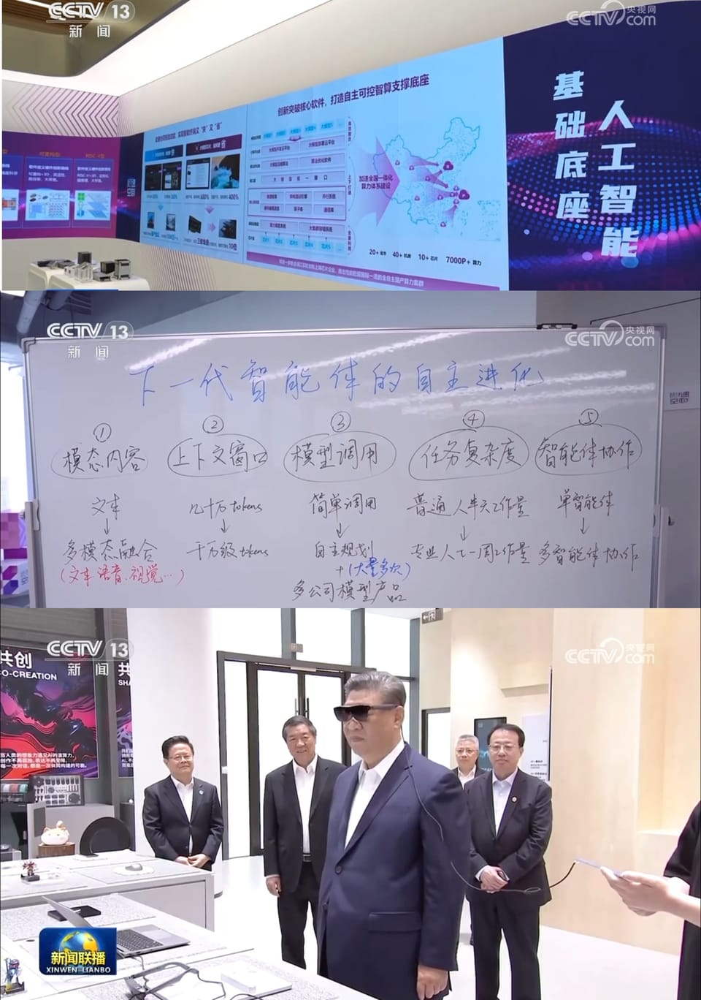

世界苦茶04月30日新闻 | 48条 | 金砖国家未能达成外长联合公报

金砖国家未能达成外长联合公报 | 中国取消美国乙烷关税 | 自民党干事长访问中国 | 朝鲜人员窃取中国秘密被拘 | 韩国男团时隔九年在中国开演唱会
三个水枪手
苦茶数据
美元兑人民币：7.26（昨日7.27，前日7.29）
美元兑日元：142.50（昨日142.83，前日143.60）
上证指数：3283（昨日3287，前日3295）
标普500指数：5528（昨日5525，前日5484）
比特币：95024（昨日94556，前日94375）
布伦特原油：65.45（昨日63.35，前日67.28）
中国新闻
• 驻印大使驳倾销指控 ：中国驻印度大使徐飞洪撰文说，中美之间的贸易战不会导致中国企业将商品倾销到其他国家，以试图缓解其他国家对中国廉价商品涌入的担忧。徐飞洪在《印度快报》星期二刊登的署名文章《挺身反对华盛顿的霸凌》中说，中国正实施扩大内需战略和促进消费专项行动，将释放巨大的消费潜力，“我们欢迎更多高质量印度商品进入中国市场”。他写道：“中国严格遵守世界贸易组织补贴纪律和市场规则，不会从事市场倾销和恶性竞争，也不会扰乱他国产业和经济发展。”
• 中方约见菲大使交涉 ：中国约见菲律宾驻华大使吉米，就菲律宾在涉台和安全领域的动向进行严正交涉。据中国外交部官网消息，中国外交部亚洲司司长刘劲松星期二约见吉米，就近期菲律宾在涉台及安全领域一系列负面动向进行了严肃交涉。近一段时间，中国和菲律宾就南中国海铁线礁主权问题发生一系列争端。中国海警4月中登上铁线礁，实施了海事控制。随后，菲律宾海军、海岸警卫队和国家警察海事组在星期天展开联合行动，登上铁线礁的三个小沙洲展示国旗，宣示对铁线礁的主权。
• 韩国男团EPEX将赴华演出 ：全体成员为韩国人的K-POP男团EPEX将于5月31日在中国福州举行单独演唱会。据韩联社报道，EPEX的东家C9娱乐星期二发布上述消息。这是全员均为韩国人的K-POP组合自2016年后，时隔九年在中国举行单独演唱会。
• 中日议员会谈促合作 ：中共中央对外联络部部长刘建超与访华的自民党干事长森山裕会面时，呼吁中日坚持开放包容，共同维护全球自由贸易体系。据中联部官网消息，刘建超星期一在北京会见由日本日中友好议员联盟会长、自民党干事长森山裕率领的日中友好议员联盟代表团。刘建超在会面中，回顾了去年11月中国国家主席习近平在利马与日本首相石破茂的会晤。他表示，中日双方应共同落实好两国领导人达成的重要共识，加强交流对话，实现两国世代友好。
• 朝IT人员窃密被拘 ：据朝鲜消息人士星期二透露，朝鲜IT人员日前因在中国窃取中国军事技术被当地公安拘留。韩联社报道，据悉，朝鲜劳动党军需工业部旗下组织曾将A某等IT人员派遣到中国沈阳。A某上月携带笔记本电脑逃离宿舍后失联，最终被中国公安关押在拘留设施。中国公安在A某笔记本上发现中方武器等多项军事机密，A某已承认其犯罪行为。朝鲜得知相关情况后，迅速召回所有同批次在当地活动的IT人员。
• 赵乐际会见日议员 ：中国全国人大常委会委员长赵乐际会见日本日中友好议员联盟会长、自民党干事长森山裕。中国外交部网站公布，赵乐际星期二在北京会见森山裕时说，中方愿同日方一道，推动落实两国领导人会晤重要成果，恪守中日四个政治文件的原则和共识，坚持合作共赢，推动两国关系沿着正确轨道行稳致远。赵乐际说，中国全国人大愿同日本国会开展多种形式对话交流。欢迎日本各界朋友多到中国参访。
• 辽宁饭店火灾致22死 ：中国辽宁省一家饭店失火造成25人死伤，中国国家主席习近平指示全力救治伤员，尽速查明原因。据中国央视新闻报道，辽宁省辽阳市白塔区三里庄回迁楼附近一家饭店星期二下午12时25分发生火灾。截至下午2时，已造成22人死亡、三人受伤。据新华社报道，事故发生后，习近平指示要全力救治受伤人员，妥善做好遇难人员善后及家属安抚等工作，尽快查明原因，依法严肃追责。
• 习近平调研上海模速空间 ：中共总书记、中国国家主席、中共中央军委主席习近平在上海考察时强调，上海承担着建设国际科技创新中心的历史使命，要抢抓机遇，不断增强科技创新策源功能和高端产业引领功能，加快建成具有全球影响力的科技创新高地。据新华社报道，习近平星期二上午在中共政治局委员、上海市委书记陈吉宁和市长龚正陪同下，到位于徐汇区的上海“模速空间”大模型创新生态社区调研。“模速空间”是上海市打造的人工智能大模型专业孵化和加速平台，已入驻企业100余家。
• 菲方否认铁线礁被占领 ：菲律宾政府星期一抨击中国媒体指中国控制了铁线礁的报道“不负责任”，并坚称铁线礁的现状没有改变。菲律宾国家安全委员会发言人马拉亚周一在记者会上说：“中国海警局声称沙洲已被占领，这完全是没有根据的说法。利用信息空间进行恐吓和骚扰符合中国的利益。”马拉亚说，有关铁线礁的报道是一篇“捏造”的新闻，这样的报道是“不负责任的”。
• 匈牙利拒与中国脱钩 ：匈牙利表明不会削弱与中国之间的经济联系，这是迄今为止最明确的信号，显示由总理欧尔班领导的匈牙利政府不会屈服于美国要求其疏远北京的压力。据路透社报道，匈牙利经济部长马尔通星期一在布达佩斯告诉记者，截至目前，匈牙利还没看到能与中国投资规模相匹敌的美国新项目进入该国，其中一个原因是美国尚未与匈牙利签订新的税收协定。他说：“我们看不到能与中国媲美的美国投资潜力。我们的立场非常务实。”
• 香港“35+案”四人出狱 ：因参与香港民主派“35+”初选而被判入狱的四名前民主派议员星期二获释，成为45名被定罪者中首批获释的人员。综合香港01、《星岛日报》和路透社报道，四名香港前立法会议员郭家麒、谭文豪、范国威及毛孟静已分别在赤柱监狱、石壁监狱及罗湖惩教所服刑四年两个月，星期二早上刑满出狱。据路透社记者在现场观察，三所监狱大门外安保严密，大批警员巡逻，部分通往监狱的道路提前数小时封闭。
亚太印太新闻
• 印度加尔各答市中心的里图拉杰酒店4月29日晚发生火灾，造成至少14人死亡。目前大火已被扑灭。起火原因尚不清楚。
• 李在明选举案将宣判 ：韩国共同民主党党内总统候选人李在明涉嫌违反《公职选举法》案终审将于星期四宣判。该裁决将决定李在明是否能竞选总统。韩联社报道，韩国最高法院星期二宣布这一消息。李在明涉嫌在京畿道知事任内的2021年10月20日，接受国会国土交通委员会对京畿道政府的国政监查时公布涉及被怀疑违规变更用途的韩国食品研究院城南市柏岘洞地皮的虚假信息。
• 越南大赦8000囚犯 ：越南政府新闻门户网站星期二发布的一份声明称，在祖国统一50周年纪念日到来之际，越南将释放8000多名囚犯，其中包括外国人。法新社报道，越南经常在重要事件前宣布特别大赦。自2009年以来，越南已提前释放近10万名囚犯，但从未将政治活动家包括在内。根据越南法律，被判犯有企图推翻共产主义政府或恐怖主义罪的人没有资格获得释放。
• 日议员支持台日协定 ：日本众议员高市早苗在与台湾总统赖清德会面时表示，她支持台日洽签台日经济伙伴协定。据台湾总统府官网消息，赖清德星期一下午接见日本众议员、前经济安全保障担当大臣高市早苗一行。赖清德在致词时感谢日本政府在重要国际场合，多次强调台海和平稳定的重要性。
• 国民党书记长涉假连署 ：台湾在野的国民党新北党部书记长陈贞容，涉罢免连署造假案被羁押禁见。综合台湾《联合报》《太报》等报道，新北地方法院星期二召开羁押庭，陈贞容被认定涉犯伪造文书、个人资料保护法等罪犯嫌重大，且有串证之虞，因此裁定羁押禁见。继本月中对新北市绿委罢免连署造假案发动第一波大规模搜查后，新北地方检察署星期一再指挥新北市调查处兵分三路启动第二波搜查，带回陈贞容、国民党新北党部党务秘书朱蓓仪，以及首波行动被约谈的国民党三重区党部执行长罗大宇、板桥区党部书记蔡甘子。
• 巴印局势或将升级 ：巴基斯坦与印度的局势在克什米尔北部袭击事件发生后不断升级，巴基斯坦国防部长警告与印度开战的可能性，但指战争是可以避免的。彭博社星期二道，巴基斯坦国防部长阿西夫接受巴基斯坦新闻频道Geo News访问时说，未来几天至关重要，“如果真要发生什么，将在两三天内发生”。他指威胁迫在眉睫，但他也说，战争是“可避免的”。
• 印度全国封锁Proton Mail ：印度一家法院已下令在全国范围内封锁加密电子邮件提供商Proton Mail。在新德里穆氏设计公司提起法律诉讼后，卡纳塔克邦高等法院周二指示印度政府封锁Proton Mail，这是一家以安全性高而闻名的流行电子邮件服务。这家当地公司声称，其员工收到了通过Proton Mail发送的包含淫秽和粗俗内容的电子邮件。在周二听证会上，法官M·纳加普拉萨纳根据《2008年信息技术法》命令印度政府“封锁 Proton Mail”。穆氏设计公司在一月提起的诉讼中呼吁印度政府对Proton Mail进行监管或屏蔽，因为尽管警方提出投诉，但该电子邮件服务仍拒绝分享有关涉嫌冒犯性电子邮件发件人的详细信息。 （翻评：说明这个邮箱可用！）
科技新闻
• 神舟十九号推迟返航 ：中国神舟十九号载人飞船因东风着陆场气象原因推迟返回。新华社星期二引述中国载人航天工程办公室消息，因近日东风着陆场气象条件不满足任务要求，为确保航天员生命健康安全和任务圆满成功，经研究决定，原计划当天实施的神舟十九号载人飞船返回任务将推迟进行，于近日择机实施。据中国央视新闻报道，按照计划，神舟十九号航天员乘组将于4月29日返回东风着陆场。着陆场区上星期五组织所有的搜救力量展开最后一次全系统综合演练，做好迎接航天员回家的准备。
• Meta推AI独立应用 ：Meta公司今天正式推出了其独立的人工智能助手应用 Meta AI ，旨在与 ChatGPT等竞争对手展开正面竞争。用户可以通过文字输入或语音对话与其交互，生成图像，并获取实时网络搜索结果。Meta AI应用的最大创新之处在于其 “发现” 动态，在这里，用户可以看到其他用户选择分享的与 Meta AI 的交互内容，这些内容是基于一个个具体的提示词进行展示的。用户可以对这些共享的人工智能帖子点赞、评论、分享，甚至将其重新混合为自己的内容。Meta公司的产品副总裁康纳·海耶斯表示，这一设计旨在揭开AI的神秘面纱，向人们展示他们可以用它做些什么。
• 特朗普政府考虑修改AI芯片出口规则，取消分级制度 ：三位知情人士称，特朗普政府正在着手修改拜登时代的一项限制全球获得人工智能芯片的规定，包括可能取消将全球分成若干等级以帮助决定一个国家可以获得多少先进半导体的规定。这些消息人士表示，上述计划仍在讨论中，并警告称可能会有调整。但如果颁布，取消分级可能使特朗普政府在贸易谈判中将美国芯片作为一项更强有力的工具。
财经新闻
• 取消美乙烷关税 ：两位知情人士星期二说，中国已取消本月初对美国乙烷进口征收的125%关税。路透社报道，此举将减轻进口美国乙烷用于石化生产的中国企业的压力，并为美国液化天然气提供出口渠道。中国的乙烷进口商包括卫星化工、新浦化工、中石化、三江精细化工和万华化学集团，而美国的主要出口商包括Enterprise Products Partners和Energy Transfer。
• 汇丰利润降拟回购股票 ：汇丰银行本财年第一季盈利下跌25%后，展开30亿美元股票回购计划，同时警告美国总统特朗普对全球实施关税将导致商业不稳定性增加。汇丰银行星期二发布本财年第一季的业绩，这个季度的税前盈利为95亿美元，低于一年前的127亿美元，但高于市场平均预测的78亿美元。汇丰银行在第一季的预期信用损失为9亿美元，这包括因为经济局势不稳定而预计损失的1亿5000万美元。银行指出，如果美国调高关税导致全球经济增长放缓，它可能进一步损失5亿美元。
• 澳酒对华出口降温 ：澳大利亚葡萄酒对华出口量出现下滑趋势，显示中国撤销关税后的出口热潮已开始降温。据路透社报道，中国去年3月29日撤销澳洲葡萄酒的反倾销和反补贴关税后，澳洲葡萄酒对华出口量激增。澳洲葡萄酒行业机构Wine Australia数据显示，截至今年3月31日的12个月内，澳洲葡萄酒对华出口总额略高于10亿澳元。其中今年一季度，澳洲葡萄酒对华出口额为1.26亿澳元，是2016年以来的新低。
• 宿迁餐饮倡议支持京东外卖 ：中国外卖平台行业竞争加剧之际，江苏省宿迁市烹饪餐饮协会发文倡议全市餐饮行业拥抱京东外卖平台。该协会随后再澄清，无意针对任何一家外卖平台。综合央广财经和纵览新闻报道，宿迁市烹饪餐饮协会星期天发文倡议会员单位以及全市餐饮行业，以“东道主”的姿态拥抱京东外卖平台，快注册，快运营，与京东外卖共同成长。倡议书称京东创始人刘强东是“让家乡骄傲的游子”，并呼吁全市餐饮行业携手京东外卖，“以匠心独运的美好滋味为纽带，既为全市消费者创造‘舌尖上的幸福’，也为京东外卖业务开展‘添薪加柴’”。宿迁是刘强东的家乡。
• 习近平考察金砖新开发银行 ：中国国家主席习近平在上海访问金砖国家新开发银行时，呼吁该行紧贴全球南方发展需求，提供更多高质量、低成本、可持续的基础设施融资。据新华社报道，习近平星期二早上抵达位于上海的金砖国家新开发银行时，新开发银行行长罗塞芙率新开发银行四位副行长及员工迎接。习近平祝贺罗塞芙再次当选新开发银行行长。习近平指出，新开发银行是首个由新兴市场国家和发展中国家创立并主导的多边开发机构，是全球南方联合自强的创举，顺应了改革和完善全球治理的历史潮流，成长为国际金融体系中新兴力量和全球南方合作的金字招牌。
• 中概股回流港交所 ：就中概股回流意向，香港证券交易所和香港证监会已与部分相关企业进行接触。据《证券时报》报道，港交所与港证监称，已根据香港特区政府的指示做好准备，若未在香港上市的中概股希望回流，会为其上市提供适当的指引与协助。香港财经事务及库务局发言人说，在海外上市的中概股一直有回流香港市场的意向，配合相关需求，港交所近年推出一系列上市制度改革，对有关上市机制作出全面检讨，以进一步便利中概股在港上市。自2018年上市制度改革截至2025年3月底，已有33家中概股发行人回流香港。
• 王毅批美贸易霸凌 ：中国外交部长王毅在巴西出席金砖国家外长会晤时，批评美国长期从自由贸易中大量获益，现在竟拿着关税当筹码向各国漫天要价，并强调如果选择默不作声、妥协退缩，只会让霸凌者得寸进尺。据中国外交部官网消息，王毅当地时间星期一在里约热内卢出席金砖国家外长会晤时就坚持多边主义、维护多边贸易规则阐明中方立场。王毅说，多边主义是二战后国际秩序的基石，团结合作是国际社会的最大公约数，然而个别国家对世界的认知却发生了严重偏差。
• 融创清盘聆讯延期 ：中国房企融创中国的境外债二次重组方案公布后，香港高等法院宣布将融创中国的清盘聆讯押后至8月份，以便融创与债权人能有更多时间就重组方案进行协商。综合彭博社和第一财经报道，香港法院星期一宣布，中国信达资产管理有限公司今年1月对融创中国提出的清盘呈请，清盘聆讯将延期四个月至8月25日。信达香港原本仅要求将聆讯延期至6月，但香港高等法院法官最终批准将聆讯押后四个月，表示各方在这起规模庞大的案件中需要更多时间推进谈判。
• 美关税影响亚洲选情 ：亚洲各地将在未来几个月举行一系列重要选举，虽然澳大利亚、韩国、日本和菲律宾的竞选活动主要围绕国内问题展开，但美国关税政策却在多数选举中产生了重大影响。4月2日，美国总统特朗普签署行政令，对包括澳洲在内的所有贸易伙伴征收对等关税。虽然特朗普在4月9日宣布暂缓征收对等关税90天，但市场仍充斥着不确定因素。澳洲本星期六的大选议题主要围绕生活成本上升。随着国际学生大量涌入推高住房成本，澳洲执政工党周一承诺，将今年国际学生新生人数上限定为27万人，反对党则主张设定更低的24万人上限。
• 美抵扣汽车关税新政 ：美国总统特朗普4月29日签署行政令，允许美国汽车制造商在两年内获得部分与零部件相关的关税抵扣。其中2026年5月1日之前组装的美国制造汽车可获得总价值3.75%的抵扣，这之后至2027年4月30日，抵扣上限将降至2.5%。此外，在有多项与汽车相关的关税时，汽车制造商只需缴纳与进口商品相关的最高关税。这意味着他们需要为汽车零部件支付25%的关税，而无需为其中的钢铝产品支付额外关税。
• 亚马逊或标注关税占比 ：亚马逊据报将在商品页面展示价格中的关税占比。亚马逊4月29日表示，从未考虑在主站点展示关税，但正在考虑在低价商城Haul上“列出某些产品的进口费用”，该计划尚未实施。白宫新闻秘书莱维特抨击此举是“敌对和政治行为”，引用了2021年亚马逊与中国宣传部门合作的报道。特朗普在29日早晨致电亚马逊创始人贝佐斯向其抱怨此事。与此同时，美国中小企业看着不断减少的库存和飞涨的价格，愈发感到绝望。美联社采访的游戏公司、家居装饰店、茶叶店、汽车配件店等受困于中国产品难以替代，关税导致成本过高等难题。名为“WS游戏”的公司表示，距离破产只剩约4个月。为了维持库存，沃尔玛和塔吉特已恢复与一些中国供应商的业务往来。此前，许多美国零售商因关税问题暂停或取消了与中国供应商的协议。沃尔玛、塔吉特和家得宝在与特朗普会谈时警告，美国各地的货架可能很快变空。
• 中药监清点对美依赖 ：知情人士说，中国药监局在今年特朗普就任后指示国有药企，清点对美国的进口依赖，包括各类原料、试剂、实验器材等，研究国产或日本等进口替代。卫健委也指示部分大型医院研究。有关替代不会马上发生，仍需经过药品监管程序，以保证质量和安全性。中国美国商会评估，一些中国医院约5%药物从美进口，可能面临125%反制关税。
• 许家印拒透露资产 ：中国恒大集团清盘人称，恒大董事长许家印计划拒绝披露其资产的详细信息。这或许使这家违约开发商清盘、以偿还债权人的过程变得更复杂。据彭博社报道，中国恒大清盘人的代表律师星期二在香港高等法院举行的听证会上表示，许家印在4月23日向法庭作出的回应中表达了上述意图。出席听证会的许家印代表律师未反驳清盘人的说法。清盘人主张尽早恢复许家印案的听证会，而许家印代表律师则以案情复杂且敏感为由，要求法庭给予更多时间。法官表示，许家印案件的听证会不会在6月30日之前举行。
• 世界银行预计贸易动荡或导致大宗商品价格跌至新冠疫情前的水平 ：世界银行预测，部分由贸易动荡造成的全球经济增长放缓将导致全球大宗商品价格在2025年下跌12%，2026年再下跌5%，实际价值将降至2020年代的最低水平。世行发布的最新《大宗商品市场展望》报告显示，经通胀调整后的大宗商品价格将在未来两年内跌至2015年至2019年的平均水平，标志着由新冠疫情后经济复苏和俄罗斯2022年入侵乌克兰推动的价格上涨期结束。
• 金砖国家外长未能达成联合公报，巴西声明反对贸易保护主义 ：金砖国家集团外长在里约热内卢举行会议后未能达成联合公报，但主席国巴西发表声明反对贸易保护主义。巴西外交部长Mauro Vieira告诉记者，金砖国家的部长们已经就关税问题达成了共识。他补充说，金砖国家正努力在7月的里约热内卢峰会上达成最终联合声明。 （翻评：昨天说的这个问题，所以说中国基本是失败了。）
• 美国总统特朗普4月29日下令，允许美国汽车生产商在两年内获得部分与零部件相关的关税补偿： 其中2026年5月1日之前组装的汽车可获得零售价格3.75%的补偿，这之后至2027年4月30日，补偿上限将降至2.5%。此外，在有多项与汽车相关的关税时，汽车制造商只需缴纳与进口商品相关的最高关税。这意味着他们需要为汽车零部件支付25%的关税，而无需为其中的钢铝产品支付额外关税。
• 法国拟明年对中国小包裹征收固定手续费： 由于美国全面征收关税，廉价商品有可能会加速涌入，法国正在推动对包括中国 Temu 和 Shein 在内的折扣零售商的小额包裹征收手续费。法国政府预算部长蒙查兰周二视察巴黎戴高乐机场附近的一个包裹分拣中心时表示，法国计划最早于2026年开始对自外国进口的小包裹征收固定手续费。蒙查兰称法国仅对每个包裹收取少量的统一费用，相当于每件商品收取几欧元。欧盟在2023年已提议取消价值在 150欧元以下的小额包裹的免税待遇，但包含该举措的相关改革措施预计要到2027年至2028年才会实施。
俄乌战争
• 泽连斯基批俄停火操控 ：乌克兰总统泽连斯基说，俄罗斯总统普京宣布要在5月8日至10日停火三天，以配合俄罗斯庆祝二战胜利的纪念活动，这其实是一场政治操控。法新社报道，泽连斯基星期一指出，普京要等到5月8日才停火，是为了要在阅兵式时保持平静，但乌克兰珍惜的是人民的生命，而不是阅兵式。他说，停火也不应只是短短几天，然后再继续杀戮。泽连斯基呼吁实现至少30天的全面与无条件停火，以为真正的外交努力提供基础。
• 朝媒高调报道援俄 ：朝鲜媒体星期二纷纷报道俄罗斯总统普京发表声明感谢朝鲜派兵援俄的消息。韩联社称，此举或意在凸显派兵正当性，同时有效管控舆情。韩联社报道，朝中社星期二报道称，普京发表声明对朝军协助俄罗斯收复库尔斯克州表示感谢，并刊发声明全文。据报道，普京在声明中指出，朝鲜依据去年6月朝俄签署的《全面战略伙伴关系条约》第四条向俄派兵，此举完全符合国际法。普京向朝鲜国务委员会委员长金正恩、朝鲜领导班子、朝鲜居民表示感谢，称“将永远铭记为俄罗斯、我们共同自由献身的朝鲜英雄”。
• 朝代表团赴俄出席会议 ：朝鲜人民军代表团前往俄罗斯出席一国际会议。朝俄是否会讨论朝军应邀派团出席俄罗斯胜利日阅兵相关事宜，备受关注。朝中社星期二报道，朝军代表团星期一访俄，将出席第三届国际反法西斯大会。韩联社指出，虽然朝鲜表示此行是为了出席国际会议，但考虑到朝俄近日不断彰显“同盟”关系，有观点认为，双方可能就朝军5月9日派团参加俄罗斯纪念卫国战争胜利80周年阅兵事宜进行讨论。俄方曾邀请朝军派团出席阅兵式。
• 法国指俄发动网络攻击 ：法国政府指控俄罗斯军事情报部门策划了持续近十年的网络攻击，这些攻击针对法国各部委、国防承包商和媒体机构，目的是收集情报并在法国国内制造分裂。法国网络安全机构本周二表示，自2021年以来在法国发生的十多起网络攻击系一个俄罗斯黑客组织所为，西方安全官员称该组织为APT28。这些攻击的目标包括智库、法国政府实体以及一个参与2024年巴黎奥运会的体育组织。法国外交部直接将该组织与俄罗斯军事情报组织GRU联系起来，并指责克里姆林宫策划了这些攻击。法国外交部在随报告发布的声明中说：“这些破坏稳定的活动是不可接受的，也不符合联合国安理会常任理事国的身份，”
• 俄罗斯拒绝特朗普提出的和平协议： 俄罗斯拒绝了美国总统唐纳德·特朗普提出的乌克兰战争和平协议，因为该协议没有给予莫斯科军队占领的领土以国际承认。俄罗斯外交部长谢尔盖·拉夫罗夫也表示，该计划未能满足克里姆林宫提出的罢免乌克兰总统弗拉基米尔·泽连斯基和限制基辅武装部队规模的要求。与此同时，俄罗斯总统弗拉基米尔·普京提议下个月在第二次世界大战欧洲结束80周年之际，实现72小时的临时停火。白宫表示，正在推动本周达成协议的特朗普希望看到“永久停火”，但他表示，他对俄罗斯和乌克兰领导人“越来越感到失望”。
其他新闻
• 西班牙排除电力攻击 ：根据初步评估，西班牙方面星期二已经排除前一天伊比利亚半岛大规模停电与可再生能源发电过剩和网络攻击有关。路透社报道，首相桑切斯星期二说，停电不可能是因为可再生能源发电过剩。他告诉记者，技术人员仍在努力查明停电的确切原因，并将根据调查结果加强系统。“昨天发生的事情绝不能再发生。”
• 阿斯利康涉税案曝光 ：英国制药巨头阿斯利康涉嫌未向中国缴纳进口税，可能面临最高800万美元的罚款。据路透社报道，阿斯利康星期二说，该公司已收到来自深圳市相关部门的意见书，指公司涉嫌未缴税款约160万美元。若此举被认定违法，可能会被处未缴纳税款的一至五倍的罚款。阿斯利康说，意见书中所指的进口税问题，与其乳腺癌药物Enhertu有关。
• 欧盟表示，C919需三至六年认证 ：欧洲联盟航空安全局执行主任弗罗伊恩·圭尔梅受访时说，该局需要三至六年时间才能对中国飞机制造商中国商飞的C919单通道商用飞机进行认证。据路透社报道，C919旨在与主流飞机制造商空客和波音的畅销窄体飞机竞争，在2022年获得中国国内安全认证，并于2023年在中国投入使用。中国商飞此前曾表示，其目标是在今年获得欧盟航空安全局的认证，以帮助其开启国际销售。弗罗伊恩·圭尔梅在法国媒体L’Usine Nouvelle星期一刊发的访问中说：“我们已正式通知他们，不可能在今年获得认证。我们将在三至六年内对C919进行认证。”
• 特朗普称掌管全世界 ：美国总统特朗普星期三即执政满百日，他说，比起第一个总统任期，他的第二个任期“有很多乐趣”，现在他不只是管理美国，也管理全世界。特朗普在《大西洋》月刊星期一刊登的访谈中这么说。《大西洋》记者迈克尔·谢勒有一天拨了特朗普的私人手机号码，虽然来电显示一个陌生号码，但特朗普还是接听了。谢勒告诉微软全国广播公司，他在电话中向特朗普道明自己的身份。特朗普和他谈了约20分钟。
• 美战机坠海或因规避袭击 ：美国海军部署在中东的“哈里·杜鲁门”号航空母舰4月28日损失了一架F/A-18E型战机。海军称，操作人员在牵引战机时失去对战机的控制，战机和牵引车坠海。战机驾驶舱和牵引车内的操作人员在坠海前逃出。一名操作人员受轻伤。调查正在进行。胡塞武装28日声称，对“哈里·杜鲁门”号航母发动了无人机和导弹袭击。一名美军官员称，初步报告表明，航母为躲避胡塞武装袭击而急转弯，致使战机落水。